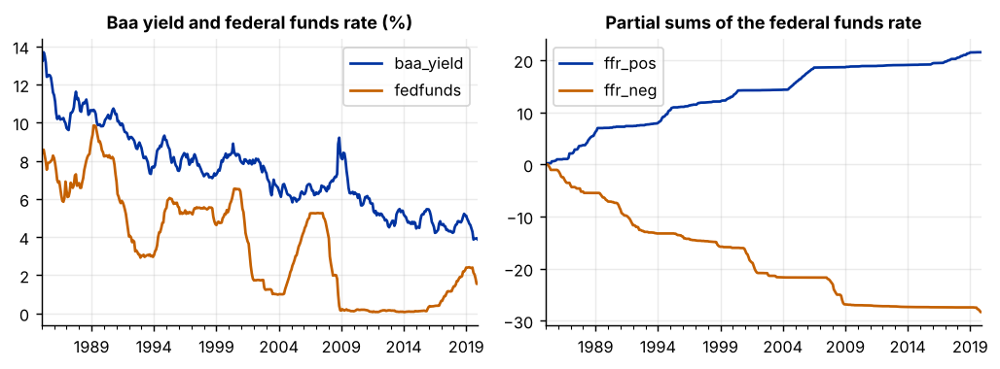
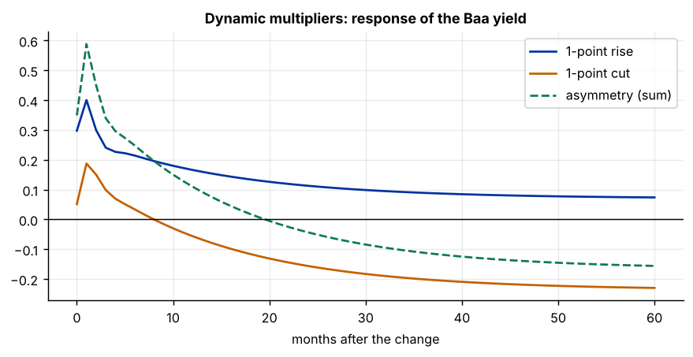

Step 1The question and the model
The question is: do corporate borrowing costs respond differently to increases and decreases in the policy rate? A standard ARDL model forces a rate rise and a rate cut of the same size to have equal and opposite effects. There are reasons to doubt that: credit risk premia, expectations about the business cycle and the behaviour of lenders can all differ between tightening and easing.
The nonlinear ARDL model of Shin, Yu and Greenwood-Nimmo (2014) relaxes this restriction with one simple device. The regressor \(x_t\) is split into two partial sums, one that accumulates only its increases and one that accumulates only its decreases:
The two partial sums then enter an ordinary ARDL model as separate regressors:
The long-run effects are \(L^{+} = -\delta^{+}/\rho\) for increases and \(L^{-} = -\delta^{-}/\rho\) for decreases. If \(L^{+} = L^{-}\) and the short-run coefficients are equal too, the model collapses to the linear ARDL.
When to use NARDL, and when not to
Use it when theory or earlier evidence gives a reason to expect asymmetry: fuel prices that rise faster than they fall, exchange-rate depreciations versus appreciations, monetary tightening versus easing. Do not use it only because it is fashionable. The symmetry tests in Steps 6 and 7 decide: if symmetry is not rejected, report the linear ARDL instead.
How to write it: model section
To allow increases and decreases in the policy rate to have different effects on corporate borrowing costs, we use the nonlinear ARDL model of Shin, Yu and Greenwood-Nimmo (2014). The federal funds rate is decomposed into partial sums of its positive and negative changes, \(x_t^{+} = \sum_{s \le t} \max(\Delta x_s, 0)\) and \(x_t^{-} = \sum_{s \le t} \min(\Delta x_s, 0)\), which enter the unrestricted error-correction model as separate regressors. The long-run effects of rate increases and rate decreases are \(L^{+} = -\delta^{+}/\rho\) and \(L^{-} = -\delta^{-}/\rho\). Long-run symmetry (\(L^{+} = L^{-}\)) and short-run symmetry (\(\sum_i \lambda_i^{+} = \sum_i \lambda_i^{-}\)) are tested with Wald tests.
Step 2Load the data and check the orders of integration
import pandas as pd
import numpy as np
import matplotlib.pyplot as plt
import statsmodels.api as sm
from statsmodels.tsa.stattools import adfuller
from statsmodels.tsa.ardl import ARDL, UECM, ardl_select_order
full = pd.read_csv("passthrough.csv", parse_dates=["date"]).set_index("date")
full.index.freq = "MS"
df = full["1985":].copy()
for col in ("baa_yield", "fedfunds"):
p0 = adfuller(df[col], autolag="AIC")[1]
p1 = adfuller(df[col].diff().dropna(), autolag="AIC")[1]
print(f"{col:10s} ADF p, level = {p0:.3f} ADF p, first difference = {p1:.3f}")
print(len(df), "monthly observations")baa_yield ADF p, level = 0.102 ADF p, first difference = 0.000 fedfunds ADF p, level = 0.132 ADF p, first difference = 0.001 420 monthly observations
How to read it
Both series are I(1), and neither is I(2). NARDL has the same requirement as ARDL: any mix of I(0) and I(1) is allowed, but no I(2) variable. The dependent variable should be I(1).
Step 3Build the partial sums
change = df["fedfunds"].diff().fillna(0)
df["ffr_pos"] = change.clip(lower=0).cumsum() # accumulates rate increases only
df["ffr_neg"] = change.clip(upper=0).cumsum() # accumulates rate decreases only
print(f"Months with a rise: {(change > 0).sum()} months with a fall: {(change < 0).sum()}")
print(f"Total of all rises: {df['ffr_pos'].iloc[-1]:.2f} points total of all falls: {df['ffr_neg'].iloc[-1]:.2f} points")
check = df["fedfunds"].iloc[0] + df["ffr_pos"] + df["ffr_neg"] - df["fedfunds"]
print(f"Largest gap between the rate and its rebuilt value: {check.abs().max():.10f}")
fig, ax = plt.subplots(1, 2, figsize=(8, 3))
df[["baa_yield", "fedfunds"]].plot(ax=ax[0], title="Baa yield and federal funds rate (%)"); ax[0].set_xlabel("")
df[["ffr_pos", "ffr_neg"]].plot(ax=ax[1], title="Partial sums of the federal funds rate"); ax[1].set_xlabel("")
plt.tight_layout()Months with a rise: 198 months with a fall: 169 Total of all rises: 21.52 points total of all falls: -28.32 points Largest gap between the rate and its rebuilt value: 0.0000000000

How to read it
ffr_pos only ever rises and ffr_neg only ever falls. Added to the starting value, they rebuild the original series exactly, which the check confirms. Always run this check: a mistake in the partial sums invalidates everything that follows.
The asymmetry tests need enough observations of both kinds. Here there are 198 months with a rise and 169 with a fall, which is well balanced. If your regressor almost always moves in one direction, NARDL cannot identify the other side.
Because ffr_neg is negative and falling, read its coefficient with care: a positive coefficient on ffr_neg means that a rate cut (a fall in ffr_neg) lowers the yield.
Step 4Choose the lags and estimate the model
y = df["baa_yield"]
X = df[["ffr_pos", "ffr_neg"]]
for ic in ("aic", "bic"):
sel = ardl_select_order(y, maxlag=6, exog=X, maxorder=6, ic=ic, trend="c")
print(f"{ic.upper()}: lags of the yield = {sel.model.ar_lags}, lags of regressors = {sel.model.dl_lags}")AIC: lags of the yield = [1, 2, 3, 4], lags of regressors = {'ffr_pos': [0, 1], 'ffr_neg': [0, 1, 2, 3, 4, 5, 6]}
BIC: lags of the yield = [1, 2, 3], lags of regressors = {'ffr_neg': [0]}How to read it
The unrestricted search gives the two partial sums very different lag lengths, and BIC drops rate increases altogether. For the symmetry tests it is cleaner to give both partial sums the same lag length, so that the comparison is like for like. We use 3 lags of the yield and 3 of each partial sum, close to the AIC choice for the yield, and vary this in the robustness step.
order = {"ffr_pos": 3, "ffr_neg": 3}
nardl = UECM(y, lags=3, exog=X, order=order, trend="c").fit()
print(nardl.summary().tables[1])==================================================================================
coef std err z P>|z| [0.025 0.975]
----------------------------------------------------------------------------------
const 0.5311 0.152 3.491 0.001 0.232 0.830
baa_yield.L1 -0.0529 0.013 -4.110 0.000 -0.078 -0.028
ffr_pos.L1 0.0037 0.008 0.487 0.626 -0.011 0.019
ffr_neg.L1 0.0125 0.006 2.093 0.037 0.001 0.024
D.baa_yield.L1 0.3233 0.048 6.743 0.000 0.229 0.417
D.baa_yield.L2 -0.1394 0.049 -2.871 0.004 -0.235 -0.044
D.ffr_pos.L0 0.2976 0.108 2.761 0.006 0.086 0.510
D.ffr_pos.L1 0.0188 0.111 0.169 0.866 -0.200 0.238
D.ffr_pos.L2 -0.0751 0.108 -0.697 0.486 -0.287 0.137
D.ffr_neg.L0 -0.0512 0.083 -0.615 0.539 -0.215 0.112
D.ffr_neg.L1 -0.1350 0.092 -1.474 0.141 -0.315 0.045
D.ffr_neg.L2 0.0518 0.084 0.618 0.537 -0.113 0.216
==================================================================================Step 5The bounds test
bounds = nardl.bounds_test(case=3)
print(f"Bounds F-statistic = {bounds.statistic:.2f}")
print("Critical values lower I(0) upper I(1)")
for level, row in bounds.critical_values.iterrows():
print(f" {100 - level:4.1f}% level {row['lower']:10.2f}{row['upper']:13.2f}")
rho = nardl.params["baa_yield.L1"]
print(f"\nError-correction coefficient = {rho:.4f} half-life = {np.log(0.5) / np.log(1 + rho):.1f} months")Bounds F-statistic = 6.88
Critical values lower I(0) upper I(1)
10.0% level 2.73 3.75
5.0% level 3.23 4.32
1.0% level 4.31 5.54
0.1% level 5.76 7.14
Error-correction coefficient = -0.0529 half-life = 12.8 monthsHow to read it
The F-statistic of 6.88 is above the upper bound at the 1% level (5.54), so a long-run relationship exists between the Baa yield and the two partial sums. The bounds test is read exactly as in the ARDL guide; the number of regressors counted for the critical values is two, the two partial sums.
The error-correction coefficient is negative and significant: 5.3% of a deviation is corrected each month, a half-life of about 13 months.
Step 6Long-run coefficients and the long-run symmetry test
L = pd.DataFrame({"long-run effect": -nardl.ci_params, "std. error": nardl.ci_bse, "p-value": nardl.ci_pvalues}).loc[["ffr_pos", "ffr_neg"]]
print(L.round(3))
wald_lr = nardl.wald_test("ffr_pos.L1 = ffr_neg.L1", scalar=True)
print(f"\nLong-run symmetry (H0: L+ = L-): F = {wald_lr.statistic:.2f} p-value = {wald_lr.pvalue:.3f}")long-run effect std. error p-value ffr_pos 0.070 0.147 0.633 ffr_neg 0.237 0.105 0.024 Long-run symmetry (H0: L+ = L-): F = 4.63 p-value = 0.032
How to read it
- Rate increases: the long-run effect is 0.07 and is not significantly different from zero. A permanent 1-point rise in the federal funds rate does not raise the Baa yield in the long run.
- Rate decreases: the long-run effect is 0.24 and significant. A 1-point cut lowers the Baa yield by about 0.24 points in the long run.
- The symmetry test has the null that the two long-run effects are equal. It is rejected at 5% (p = 0.03): the long-run response is asymmetric.
The test restricts the two level coefficients to be equal, which is the same as \(L^{+} = L^{-}\) because both are divided by the same \(\rho\).
Step 7The short-run symmetry test
pos = " + ".join(f"D.ffr_pos.L{i}" for i in range(3))
neg = " + ".join(f"D.ffr_neg.L{i}" for i in range(3))
wald_sr = nardl.wald_test(f"{pos} = {neg}", scalar=True)
print(f"Sum of short-run coefficients, increases: {sum(nardl.params[f'D.ffr_pos.L{i}'] for i in range(3)):.3f}")
print(f"Sum of short-run coefficients, decreases: {sum(nardl.params[f'D.ffr_neg.L{i}'] for i in range(3)):.3f}")
print(f"Short-run symmetry (H0: sums are equal): F = {wald_sr.statistic:.2f} p-value = {wald_sr.pvalue:.3f}")
print(f"Impact effect of an increase: {nardl.params['D.ffr_pos.L0']:.3f} (p = {nardl.pvalues['D.ffr_pos.L0']:.3f})")
print(f"Impact effect of a decrease: {nardl.params['D.ffr_neg.L0']:.3f} (p = {nardl.pvalues['D.ffr_neg.L0']:.3f})")Sum of short-run coefficients, increases: 0.241 Sum of short-run coefficients, decreases: -0.135 Short-run symmetry (H0: sums are equal): F = 3.38 p-value = 0.067 Impact effect of an increase: 0.298 (p = 0.006) Impact effect of a decrease: -0.051 (p = 0.539)
How to read it
In the month of a rate rise, the Baa yield goes up by 0.30 points per point, and this is significant. In the month of a rate cut there is no significant response. The test of equal short-run sums has a p-value of 0.07: asymmetry at the 10% level, not at 5%.
Put the two tests together and a pattern appears. Rate rises pass through quickly but not permanently; rate cuts pass through slowly but permanently. Four outcomes are possible in any NARDL study, and you should say which one you have: symmetry in both, asymmetry only in the long run, only in the short run, or in both.
Step 8Dynamic multipliers
The dynamic multiplier traces the path from the short run to the long run: the cumulative response of the yield, month by month, to a permanent 1-point rise and to a permanent 1-point cut.
levels = ARDL(y, lags=3, exog=X, order=order, trend="c").fit() # the same model written in levels
phi = [levels.params[f"baa_yield.L{i}"] for i in (1, 2, 3)]
def multiplier(name, horizon=60):
theta = [levels.params[f"{name}.L{j}"] for j in range(4)]
m = np.zeros(horizon + 1)
for h in range(horizon + 1):
m[h] = sum(theta[: h + 1]) + sum(phi[i] * m[h - i - 1] for i in range(3) if h - i - 1 >= 0)
return m
rise = multiplier("ffr_pos") # response to a 1-point rise
cut = -multiplier("ffr_neg") # response to a 1-point cut (ffr_neg falls by 1)
print(f"{'months':>7s}{'1-point rise':>14s}{'1-point cut':>13s}{'asymmetry':>11s}")
for h in (0, 1, 3, 6, 12, 24, 60):
print(f"{h:7d}{rise[h]:14.3f}{cut[h]:13.3f}{rise[h] + cut[h]:11.3f}")
fig, ax = plt.subplots(figsize=(8, 3.4))
ax.plot(rise, label="1-point rise"); ax.plot(cut, label="1-point cut"); ax.plot(rise + cut, ls="--", label="asymmetry (sum)")
ax.axhline(0, color="k", lw=.8); ax.set_xlabel("months after the change"); ax.set_title("Dynamic multipliers: response of the Baa yield"); ax.legend() months 1-point rise 1-point cut asymmetry
0 0.298 0.051 0.349
1 0.401 0.188 0.588
3 0.241 0.099 0.339
6 0.214 0.034 0.248
12 0.166 -0.056 0.110
24 0.113 -0.156 -0.043
60 0.074 -0.230 -0.156
How to read it
- After a rise the yield jumps by 0.30 points at once and by 0.40 after one month. The effect then fades, to 0.17 after a year and 0.07 after five years.
- After a cut the yield does not fall at first; the point estimates for the first months are slightly positive and not significant. The decline builds slowly: −0.06 after a year, −0.16 after two years and −0.23 after five.
- The asymmetry line is the sum of the two. It would be zero at every horizon if the responses were mirror images. It starts positive, because rises have the larger short-run effect, crosses zero after about two years, and ends negative, because cuts have the larger long-run effect.
Both lines converge to the long-run effects from Step 6 (0.07 and −0.24), which is a useful check that the multipliers were computed correctly. The multiplier figure is usually the main figure of a NARDL paper.
Step 9Diagnostic tests
from statsmodels.stats.diagnostic import acorr_breusch_godfrey, het_white, het_arch, breaks_cusumolsresid
from statsmodels.stats.stattools import jarque_bera
ols = sm.OLS(nardl.model._y, nardl.model._x).fit()
print(f"Breusch-Godfrey (12 lags): p-value = {acorr_breusch_godfrey(ols, nlags=12)[1]:.3f}")
print(f"White heteroskedasticity: p-value = {het_white(ols.resid, ols.model.exog)[1]:.3f}")
print(f"ARCH (6 lags): p-value = {het_arch(ols.resid, nlags=6)[1]:.3f}")
print(f"Jarque-Bera normality: p-value = {jarque_bera(ols.resid)[1]:.3f}")
print(f"CUSUM stability: p-value = {breaks_cusumolsresid(ols.resid, ddof=len(ols.params))[1]:.3f}")
robust = UECM(y, lags=3, exog=X, order=order, trend="c").fit(cov_type="HAC", cov_kwds={"maxlags": 6})
print(f"\nWith HAC standard errors: long-run symmetry p-value = {robust.wald_test('ffr_pos.L1 = ffr_neg.L1', scalar=True).pvalue:.3f}"
f" short-run symmetry p-value = {robust.wald_test(f'{pos} = {neg}', scalar=True).pvalue:.3f}")Breusch-Godfrey (12 lags): p-value = 0.633 White heteroskedasticity: p-value = 0.000 ARCH (6 lags): p-value = 0.693 Jarque-Bera normality: p-value = 0.000 CUSUM stability: p-value = 0.514 With HAC standard errors: long-run symmetry p-value = 0.084 short-run symmetry p-value = 0.085
How to read it
- Serial correlation. Not rejected (p = 0.63), so the bounds test is valid.
- ARCH and CUSUM. Neither rejects.
- Heteroskedasticity and normality. Both rejected, so the Wald tests should be based on robust standard errors.
- The symmetry tests with HAC standard errors give p-values of 0.08 for both the long run and the short run, compared with 0.03 and 0.07 before. Because the White test rejected, these robust p-values are the ones to rely on.
That changes the wording of the conclusion: the evidence for asymmetry is significant at the 10% level, not the 5% level. Report the robust version. Choosing whichever standard errors give the smaller p-value is not acceptable practice, and referees check.
Step 10Robustness checks
def run(sample, p, q):
d_ = full[sample[0]:sample[1]].copy()
ch = d_["fedfunds"].diff().fillna(0)
d_["ffr_pos"], d_["ffr_neg"] = ch.clip(lower=0).cumsum(), ch.clip(upper=0).cumsum()
m = UECM(d_["baa_yield"], lags=p, exog=d_[["ffr_pos", "ffr_neg"]], order={"ffr_pos": q, "ffr_neg": q}, trend="c").fit()
b = m.bounds_test(case=3)
sr = m.wald_test(" + ".join(f"D.ffr_pos.L{i}" for i in range(q)) + " = " + " + ".join(f"D.ffr_neg.L{i}" for i in range(q)), scalar=True).pvalue
return (b.statistic, b.critical_values.loc[95.0, "upper"], -m.ci_params["ffr_pos"], -m.ci_params["ffr_neg"],
m.wald_test("ffr_pos.L1 = ffr_neg.L1", scalar=True).pvalue, sr)
cases = {"Baseline 1985-2019, (3,3,3)": (("1985", "2019"), 3, 3), "Lags (2,2,2)": (("1985", "2019"), 2, 2), "Lags (4,4,4)": (("1985", "2019"), 4, 4),
"1985-2007": (("1985", "2007"), 3, 3), "1990-2019": (("1990", "2019"), 3, 3), "1970-2019": (("1970", "2019"), 3, 3)}
print(f"{'':28s}{'bounds F':>9s}{'5% upper':>9s}{'L+ (rise)':>10s}{'L- (cut)':>9s}{'LR sym. p':>10s}{'SR sym. p':>10s}")
for name, (sample, p, q) in cases.items():
f, cv, lp, ln, plr, psr = run(sample, p, q)
print(f"{name:28s}{f:9.2f}{cv:9.2f}{lp:10.2f}{ln:9.2f}{plr:10.3f}{psr:10.3f}")
linear = UECM(y, lags=3, exog=df[["fedfunds"]], order={"fedfunds": 3}, trend="c").fit()
print(f"\nLinear ARDL for comparison: long-run effect = {-linear.ci_params['fedfunds']:.2f} bounds F = {linear.bounds_test(case=3).statistic:.2f} AIC = {linear.aic:.1f} (NARDL AIC = {nardl.aic:.1f})")bounds F 5% upper L+ (rise) L- (cut) LR sym. p SR sym. p Baseline 1985-2019, (3,3,3) 6.88 4.32 0.07 0.24 0.032 0.067 Lags (2,2,2) 7.16 4.32 0.03 0.22 0.010 0.045 Lags (4,4,4) 7.60 4.32 0.09 0.26 0.018 0.109 1985-2007 7.29 4.32 0.09 0.26 0.009 0.213 1990-2019 3.84 4.32 -0.00 0.20 0.039 0.094 1970-2019 10.58 4.32 0.81 0.82 0.761 0.887 Linear ARDL for comparison: long-run effect = 0.56 bounds F = 6.57 AIC = -191.1 (NARDL AIC = -196.6)
How to read it
- Lag length. With 2, 3 or 4 lags the long-run effects stay at about 0.05 for rises and 0.24 for cuts, and long-run symmetry is rejected each time.
- 1985–2007. The long-run asymmetry is unchanged, so it is not a product of the zero-rate years after 2008. Short-run asymmetry is not significant in this sample.
- 1990–2019. The bounds F-statistic of 3.84 lies between the bounds (3.23 and 4.32): the test is inconclusive, so the long-run results for this subsample cannot be interpreted.
- 1970–2019. With the high-inflation years included, the long-run effects are 0.81 and 0.82 and symmetry is clearly not rejected (p = 0.76). Over the longer sample the response is symmetric and much larger.
- Linear ARDL. The symmetric model gives a single long-run effect of 0.56. The NARDL has the lower AIC, so the data from 1985 prefer the asymmetric model.
The asymmetry is a feature of the period since 1985, not a constant of the economy. One reason to be careful: both yields and the policy rate trended downwards over 1985–2019, and the falling partial sum may partly capture that common decline. A paper should present the asymmetry as a finding for this period and discuss this possibility.
Step 11Write the paper
| Section | What goes in it | From which step |
|---|---|---|
| Data | Sources, sample, unit-root tests, plot of the series and the partial sums | Steps 2 and 3 |
| Method | Why asymmetry is expected, the partial-sum decomposition, the NARDL equation | Step 1 |
| Cointegration | Bounds F-statistic with critical values | Step 5 |
| Long-run results | \(L^{+}\) and \(L^{-}\) with standard errors, long-run symmetry test | Step 6 |
| Short-run results | Short-run coefficients, short-run symmetry test, dynamic multiplier figure | Steps 7 and 8 |
| Robustness | Diagnostics, lag lengths, samples, comparison with the linear ARDL | Steps 9 and 10 |
How to write it: results
The bounds F-statistic of 6.88 exceeds the 1% upper critical value (5.54), indicating a long-run relationship between the Baa yield and the positive and negative partial sums of the federal funds rate. The estimated long-run effects differ markedly: a one-point reduction in the policy rate lowers the Baa yield by 0.24 points in the long run (s.e. 0.11), whereas the long-run effect of a one-point increase is 0.07 and statistically insignificant. A Wald test rejects long-run symmetry at the 10% level with heteroskedasticity- and autocorrelation-robust standard errors (p = 0.08). In the short run the pattern is reversed: a rate increase raises the yield by 0.30 points within the month, while a rate cut has no significant immediate effect. The dynamic multipliers in Figure 3 show that the response to increases peaks after one month and then decays, while the response to cuts builds gradually over several years. The asymmetry is specific to the period since 1985; over 1970–2019 the long-run responses to increases and cuts are both about 0.8 and symmetry is not rejected.
What a referee will ask
- Why should the effect be asymmetric? Give the economic reason before the statistics.
- Is symmetry actually rejected? Report both Wald tests. If neither rejects, the linear ARDL is the right model.
- Are there enough rises and enough falls? Report the counts.
- Do the partial sums just pick up a trend? Partial sums trend by construction, one up and one down. If the dependent variable has a long trend of its own, the two can become confused. Check subsamples and, where sensible, include a trend.
- Where are the confidence bands on the multipliers? Journals increasingly expect bootstrap bands around the asymmetry line.
- Are the results stable across samples? Asymmetry found in one period often does not hold in another.